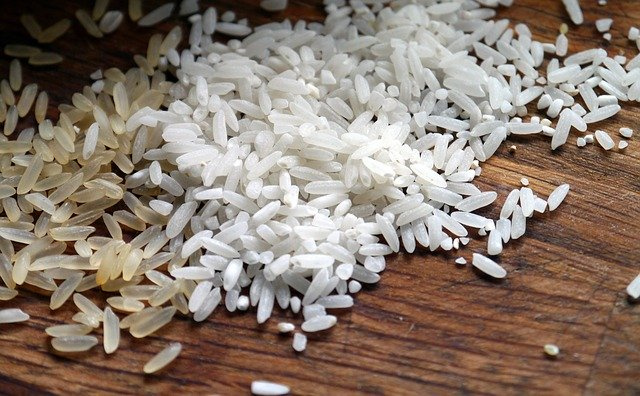

從前沒有耕耘機的時代，種田是一件相當辛苦的工作。有一首歌閩南語歌謠《農村曲》，充分描述了種田人的辛苦。歌詞的大意是說：天還沒亮就要下田工作，不管冬天田裡的水冰寒刺骨，也不顧炎夏正午烈日高照，總是要在田裡忙個不停。
一般來說，種稻的程序包括：插秧、耕田、收割和儲藏四個階段。插秧前，要先選好稻種，再經過適當的浸泡，然後把剛長出嫩根的稻種灑在秧田上，等待秧苗成長。這個時候要特別注意防風、防鳥、以及預防寒害。秧苗長大後，農家就要忙著插秧，將秧苗整齊的插在水田中。
所謂「耕田」，就是除草的意思。綠油油的稻田，需要農夫悉心呵護。水稻成長期間，田水要保持適度的深度，還要反覆的排水、引水，並不時的除草和防止病蟲害。除草時，農夫在田上倒退走，一面拔除野草，一面翻鬆田土，並把肥料揉進泥土中。
等到稻子成熟時，一片金黃色的稻穗如波浪搖曳，散發出陣陣稻香，農家又要忙著收割了。割稻時，先把稻子整把、整把的割下，然後用打穀機打下稻穀。打好的稻穀，再用曬穀機在曬穀場上曝晒。這時候要一遍又一遍的翻動稻穀，讓所有的穀粒都充分晒乾，最後再放進穀倉收藏。

兩、三百年前，先民們從中國原鄉移民來臺灣，胼手胝足，開墾荒野，辛勤的耕耘種田，養活了一代代的臺灣子民。所以千萬不要忘記，我們都是吃臺灣米長大的。
雖然近年來人們的飲食習慣改變，西式速食的便利性勝過傳統米食，可是相信在你的記憶中，最難忘的應該還是米飯的香味，因為那不只是代表美味，更有濃濃的情感在裡面。
